参考：Athena からの vocabulary の入手方法
Usagi をセットアップするための手順を説明します。
本セットアップ手順は、以下の環境が準備されていることを前提としています。
作業の所要時間は約1時間です。
Usagi の動作環境を構築します。
GithubのOHDSI/Usagi にアクセスして、セットアップを進めていきます。
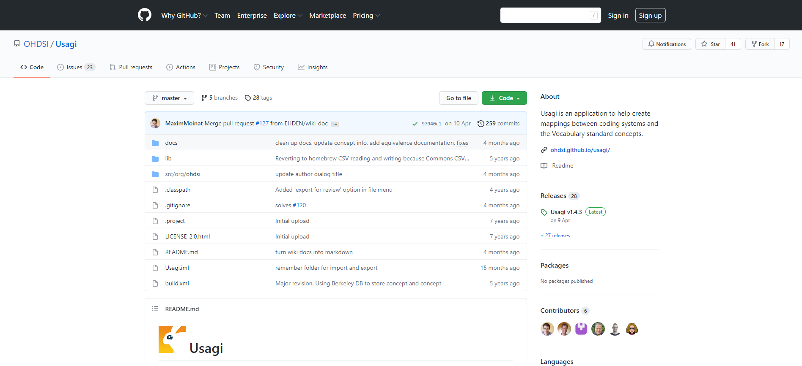
GithubのOHDSI/Usagi ページの［Getting Started］項目内の Athena（赤枠）をクリックします。
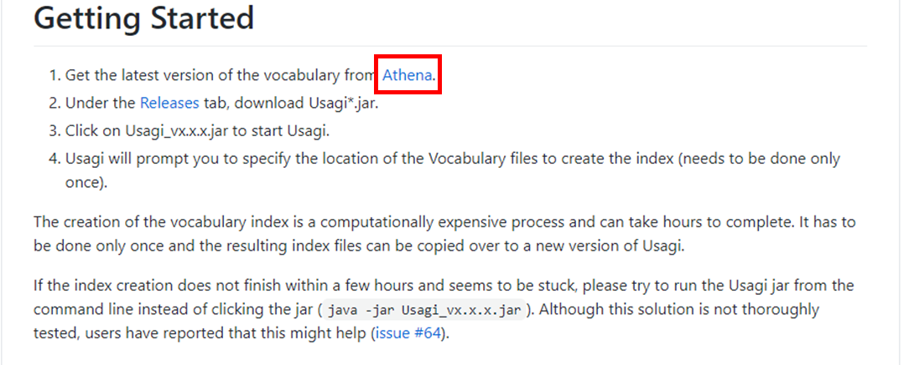
ATHENA サイトに初めて訪問すると、ライセンスの認証画面が表示されます。
右下の ACCEPT ボタンをクリックします。
※表示されない場合は次に進みます
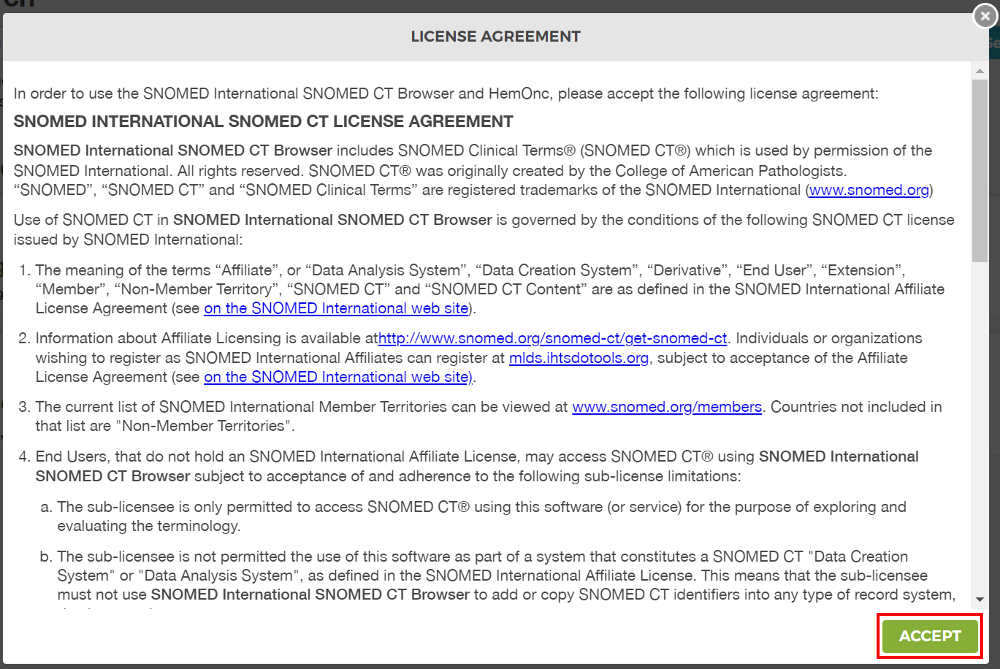
Odysseus Data Services, Inc. 「Athena」
右上の［LOGIN］をクリックします。
※用語の検索は会員登録不要ですが、Vocabulary のダウンロードを行うには会員登録が必要となります
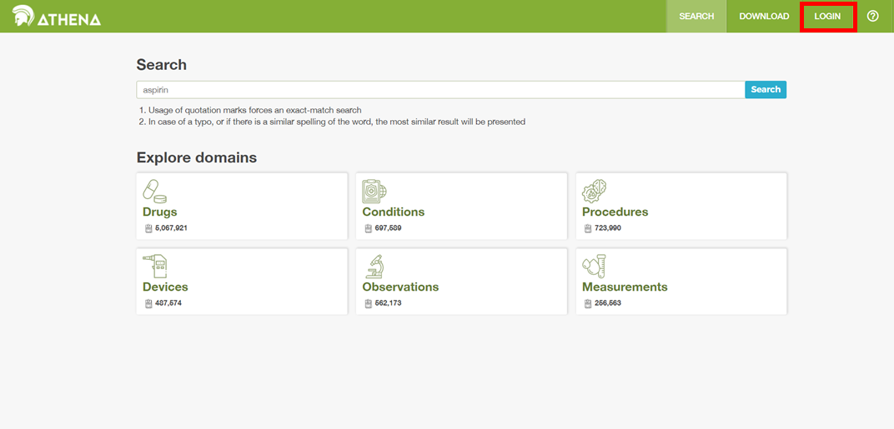
Odysseus Data Services, Inc. 「Athena」
会員登録後にログインし、各領域の Vocabulary を入手することができるようになります。
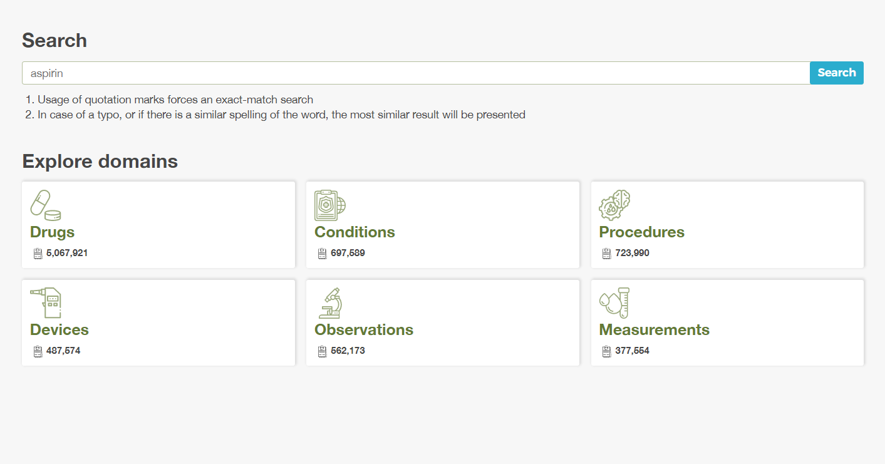
Odysseus Data Services, Inc. 「Athena」
GithubのOHDSI/Usagi ページの［Getting Started］項目内の Releases（赤枠）をクリックします。
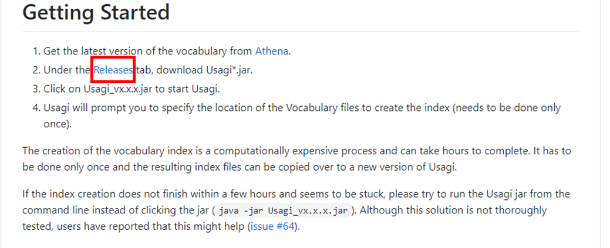
Usagi_v1.4.3.jar（赤枠）をクリックし、ファイルをダウンロードします。
（バージョンが異なる場合、参考資料とファイル名も異なるため注意してください。）
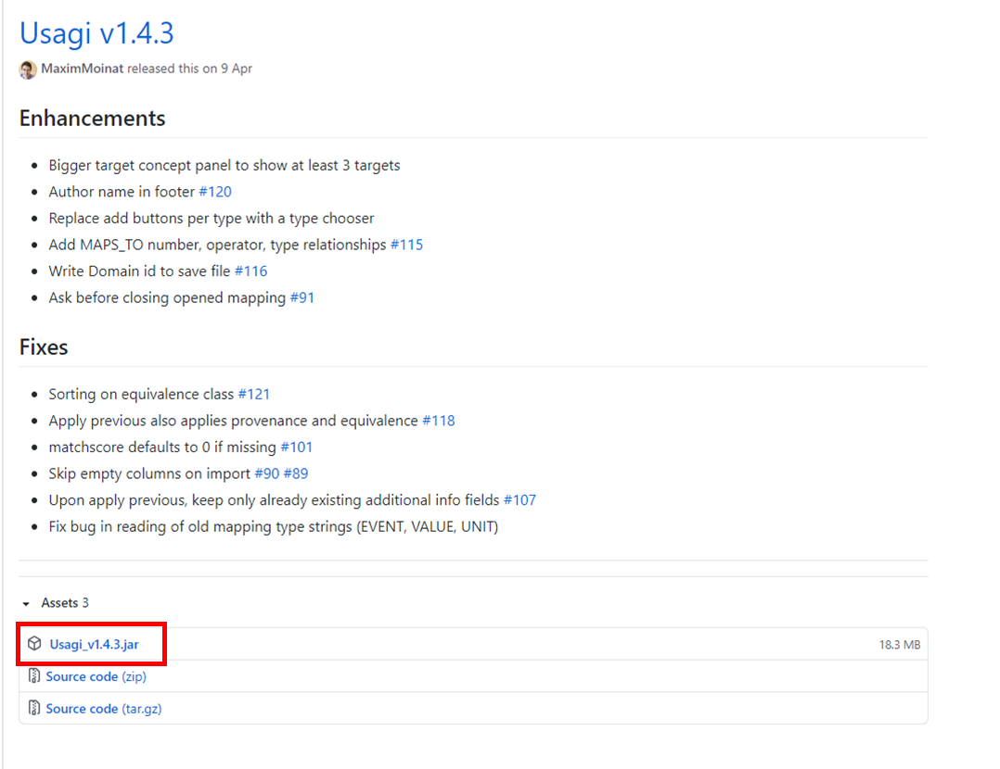
ダウンロードしたファイルをクリックした後、「この種類のファイルはコンピューターに損害を与える可能性があります。」と表示されますが、「保存」をクリックし、任意の場所に保存します。
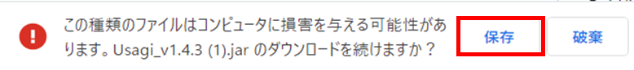
Windows10 の環境では、jar ファイルを開くためにバッチを作成する必要があります。
以下でバッチの作成と Usagi の起動について説明します。
２．２．でダウンロードした Usagi の jar ファイルを任意のフォルダに格納します。
同一フォルダ内に新規テキストを作成します。
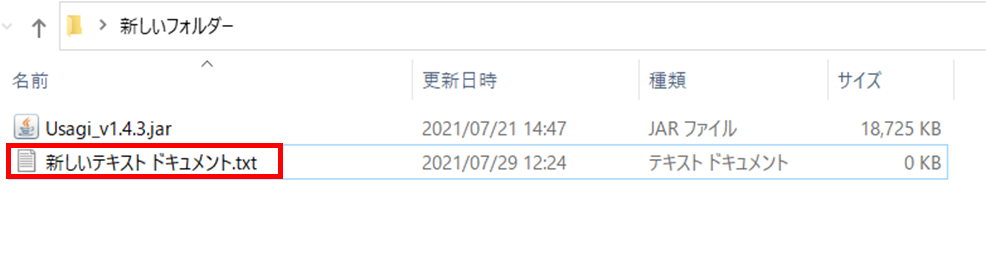
テキストを開き、
java -jar Usagi_v1.4.3.jar
を記載します。（Usagi のファイルのバージョンは必要に応じて変更してください）
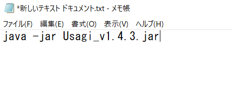
テキストファイルの拡張子を .bat に変更して保存します。（ファイル名は任意です）
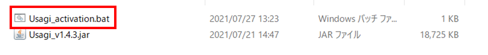
バッチファイルをダブルクリックすると、Usagi が起動します。
起動時に Author 記入欄が表示されます。
Author を指定する場合は任意の名前を入力し、［Save］をクリックしてください。
指定しない場合は、［×］をクリックすると次の画面に遷移します。
Author を指定すると画面下（赤枠）に Author が表示されます。
以上の操作で Usagi の起動は完了です。
※Usagi 起動時に、下図の様に「Rebuild index」と言う画面が表示されますが、ここでは「Cancel」をクリックしてください。
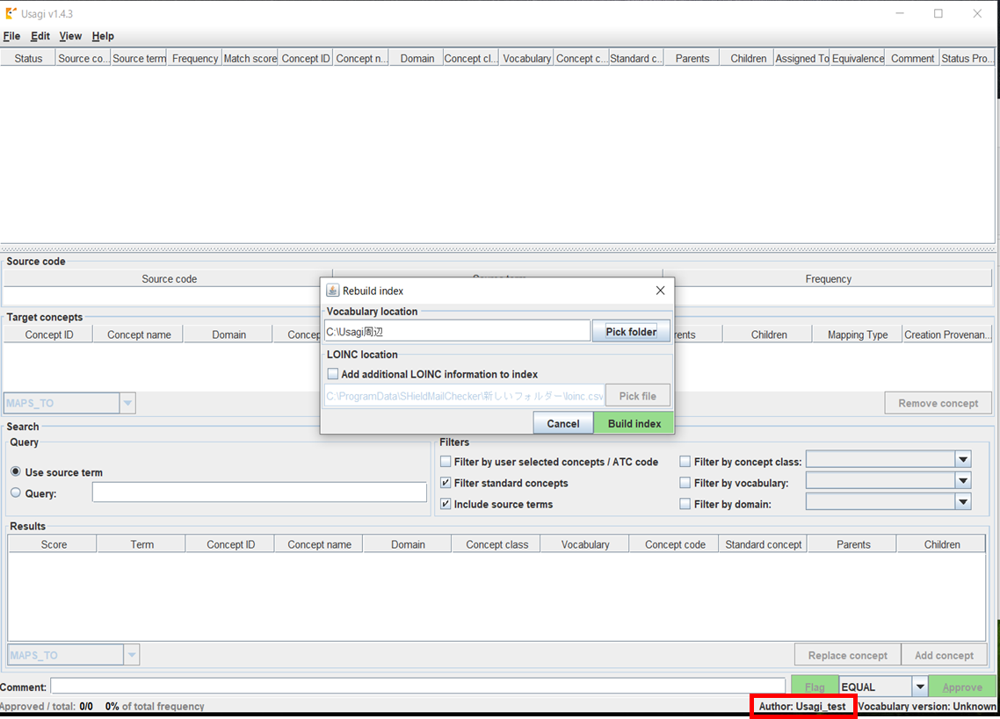
Usagi の画面左上の［File］タブ内の［Exit］（赤枠）をクリックして Usagi を終了します。
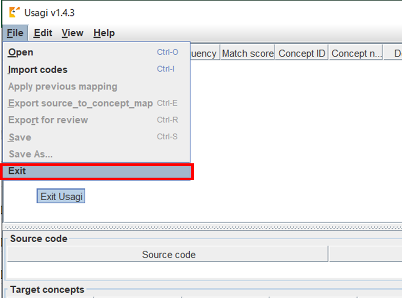
Athena を開き、ログインします。 ログイン後、画面右上の［DOWNLOAD］をクリックします。
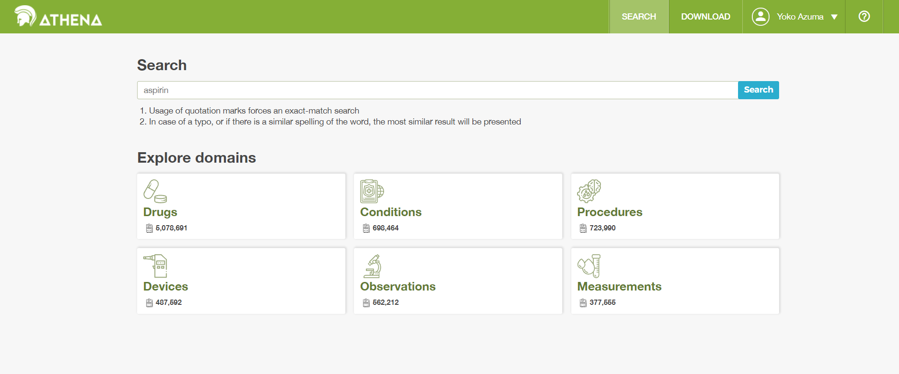
Odysseus Data Services, Inc. 「Athena」
［DOWNLOAD］をクリックすると、以下の画面が表示されます。
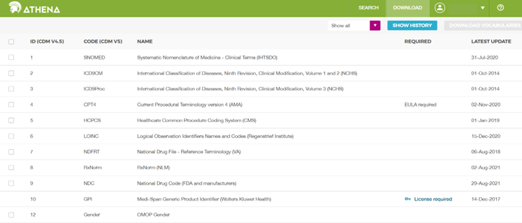
Odysseus Data Services, Inc. 「Athena」
本書では以下の vocabulary のダウンロードを実施しています。
各研究に応じて、ダウンロードする vocabulary は取捨選択してください。
注意：「Required」欄に「License required」と記載がある vlcabulary は、ダウンロード時にライセンスが求められる場合があります。
| ID | CODE | NAME |
|---|---|---|
| 1 | SNOMED | Systematic Nomenclature of Medicine - Clinical Terms (IHTSDO) |
| 2 | ICD9CM | International Classification |
| 3 | ICD9Proc | International Classification of Diseases, Ninth Revision, ClinicalModification, Volume 3 (NCHS) |
| 4 | CPT4 | Current Procedural Terminology version 4 (AMA) |
| 5 | HCPCS | Healthcare Common Procedure Coding System (CMS) |
| 6 | LOINC | Logical Observation Identifiers Names and Codes (RegenstriefInstitute) |
| 7 | NDFRT | National Drug File - Reference Terminology (VA) |
| 8 | RxNorm | RxNorm (NLM) |
| 9 | NDC | National Drug Code (FDA and manufacturers) |
| 12 | Gender | OMOP Gender |
| 13 | Race | Race and Ethnicity Code Set (USBC) |
| 14 | CMS Place ofService | Place of Service Codes for Professional Claims (CMS) |
| 16 | Multum | Cerner Multum (Cerner) |
| 17 | Read | NHS UK Read Codes Version 2 (HSCIC) |
| 21 | ATC | WHO Anatomic Therapeutic Chemical Classification |
| 28 | VANDF | Veterans Health Administration National Drug File |
| 31 | SMQ | Standardised MedDRA Queries (MSSO) |
| 32 | VA Class | VA National Drug File Class (VA) |
| 33 | Cohort | Legacy OMOP HOI or DOI cohort |
| 34 | ICD10 | International Classification of Diseases, Tenth Revision (WHO) |
| 35 | ICD10PCS | ICD-10 Procedure Coding System (CMS) |
| 40 | DRG | Diagnosis-related group (CMS) |
| 41 | MDC | Major Diagnostic Categories (CMS) |
| 42 | APC | Ambulatory Payment Classification (CMS) |
| 43 | RevenueCode | UB04/CMS1450 Revenue Codes (CMS) |
| 44 | Ethnicity | OMOP Ethnicity |
| 46 | MeSH | Medical Subject Headings (NLM) |
| 47 | NUCC | National Uniform Claim Committee Health Care Provider Taxonomy Code Set (NUCC) |
| 48 | MedicareSpecialty | Medicare provider/supplier specialty codes (CMS) |
| 50 | SPL | Structured Product Labeling (FDA) |
| 53 | GCN_SEQNO | Clinical Formulation ID (FDB) |
| 55 | OPCS4 | OPCS Classification of Interventions and Procedures version 4 (NHS) |
| 57 | HESSpecialty | Hospital Episode Statistics Specialty (NHS) |
| 60 | PCORNet | National Patient-Centered Clinical Research Network (PCORI) |
| 65 | Currency | International Currency Symbol (ISO 4217) |
| 70 | ICD10CM | International Classification of Diseases, Tenth Revision, Clinical Modification (NCHS) |
| 71 | ABMS | Provider Specialty (American Board of Medical Specialties) |
| 75 | dm+d | Dictionary of Medicines and Devices (NHS) |
| 76 | BDPM | Public Database of Medications (Social-Sante) |
| 80 | EphMRAATC | Anatomical Classification of Pharmaceutical Products (EphMRA) |
| 81 | NFC | New Form Code (EphMRA) |
| 82 | RxNormExtension | RxNorm Extension (OHDSI) |
| 86 | MMI | Modernizing Medicine (MMI) |
| 87 | SpecimenType | OMOP Specimen Type |
| 88 | CVX | CDC Vaccine Administered CVX (NCIRD) |
| 90 | ICDO3 | International Classification of Diseases for Oncology, Third Edition (WHO) |
| 94 | GGR | Commented Drug Directory (BCFI) |
| 109 | MEDRT | Medication Reference Terminology MED-RT (VA) |
| 111 | EpisodeType | OMOP Episode Type |
| 112 | SNOMEDVeterinary | SNOMED Veterinary |
| 113 | JMDC | Japan Medical Data Center Drug Code (JMDC) |
| 115 | Provider | OMOP Provider |
| 116 | Supplier | OMOP Supplier |
| 117 | HemOnc | HemOnc |
| 118 | NAACCR | Data Standards & Data Dictionary Volume II (NAACCR) |
| 123 | CTD | Comparative Toxicogenomic Database |
| 128 | OMOPExtension | OMOP Extension (OHDSI) |
| 134 | CIViC | Clinical Interpretation of Variants in Cancer (civicdb.org) |
| 136 | ClinVar | ClinVar (NCBI) |
| 138 | NCIt | NCI Thesaurus (National Cancer Institute) |
| 141 | CancerModifier | Diagnostic Modifiers of Cancer (OMOP) |
| 142 | OPS | Operations and Procedures Classification (OPS) |
| 143 | CCAM | Common Classification of Medical Acts |
| 145 | OncoKB | Oncology Knowledge Base (MSK) |
| 146 | OMOPGenomic | OMOP Genomic vocabulary |
| 147 | OncoTree | OncoTree (MSK) |
ダウンロード方法を説明します。
上記に記載した vocabulary のチェック欄（左側赤枠）をクリックしてチェックを入れ、画面右上の紫色の［DOWNLOAD VOCABULARIES］をクリックします。
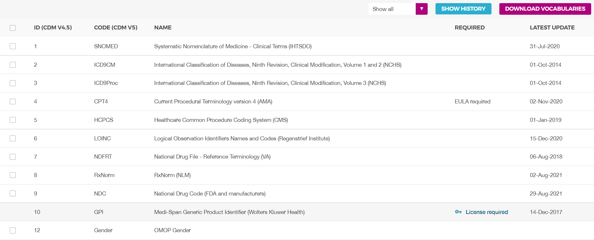
Odysseus Data Services, Inc. 「Athena」
［DOWNLOAD SUMMARY］が表示されるので、［name bundle］欄に任意の名前を入力してください。
（［name bundle］に入力した名前は、［DOWNLOAD HISTORY］に表示されるファイル名になります）
［Notify me about changes in these vocabularies］にチェックを入れて、［DOWNLOAD］をクリックします。
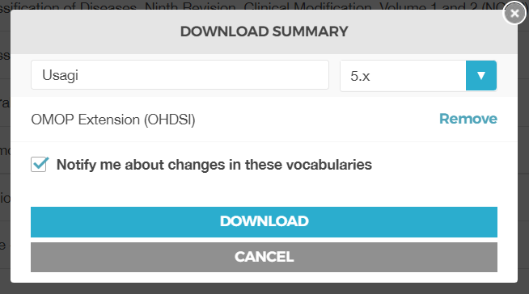
Odysseus Data Services, Inc. 「Athena」
vocabulary のダウンロードが準備中であるというメッセージが表示されます。
［SHOW HISTORY］をクリックします。
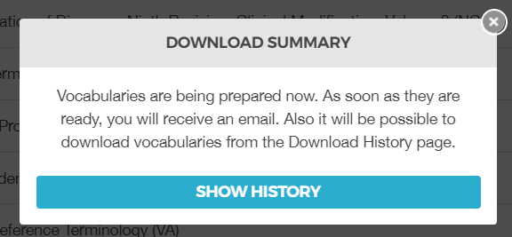
Odysseus Data Services, Inc. 「Athena」
ダウンロードの準備が完了するまで状態が「PENDING」となります。
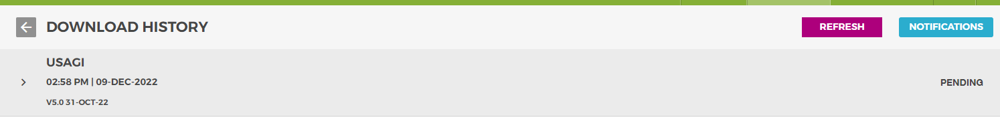
Odysseus Data Services, Inc. 「Athena」
ダウンロードの準備が完了すると、Athena からメールが届きます。（ダウンロードクリックから数分程度かかります）
メール受領後、Athena画面右上の［REFRESH］をクリックします。
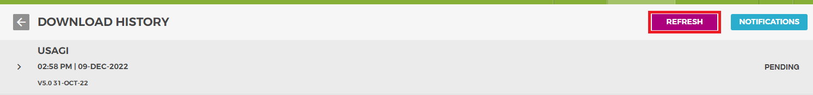
Odysseus Data Services, Inc. 「Athena」
［name bundle］で指定した名称の項目の［DOWNLOAD］をクリックすると vocabulary がダウンロードされます。
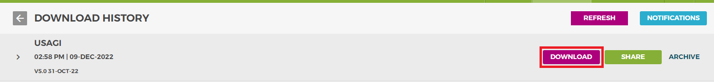
Odysseus Data Services, Inc. 「Athena」
ダウンロードした vocabulary には下記のファイルが含まれています。
これらのファイルは Usagi の Index の作成で使用します。（【Usagi 操作手順書】【3-3】参照）
| ファイル名 |
|---|
| CONCEPT.csv |
| CONCEPT_ANCESTOR.csv |
| CONCEPT_CLASS.csv |
| CONCEPT_CPT4.csv |
| CONCEPT_RELATIONSHIP.csv |
| CONCEPT_SYNONYM.csv |
| DOMAIN.csv |
| DRUG_STRENGTH.csv |
| RELATIONSHIP.csv |
| VOCABULARY.csv |
Athena 上で vocabulary にアップデートがあった場合には、Athena より「Vocabulary versionupdate」という件名で登録したメールアドレス宛に通知が来ます。
メール本文に新しいバージョンがリリースされた vocabulary 名が記載されており、対象の vocabulary を最新化するために、Athena のサイトから上記の方法に従って再度ダウンロードする必要があります。
ダウンロード後は、改めて Usagi で vocabulary ファイルの読込を実施してください。
Usagi への読込については、【Usagi 操作手順書】の【3-3】を参照してください。